A score says how well. It rarely says how.
Agents as "one-off" solvers
- Produce answers or actions for one task instance, leaving no reusable decision rule
- Internal decision processes remain difficult to interpret
- Success scores alone can conceal shortcuts or other sources of gains (Kapoor 2024, 2026)
- Even explicit reasoning traces can hide intent once optimized for (Baker 2025)
Agents as authors of code policies
- Strategy expressed as an executable policy: observations in, actions out
- Run repeatedly and evaluated independently after the agent finishes
- Human-interpretable and inspectable: read the strategy behind the score
- Heuristics accumulate through refinement with execution feedback
From code-as-policy to Heuristic Learning
- 1Programs from traces and examples: recursive programs from problem-solving traces; RobustFill2006 / 2017
- 2LEAPS: code search connected to interpretable policies2021
- 3Code as Policies, ProgPrompt: executable policies and plans for robots2023
- 4FunSearch, Evolution of Heuristics, AlphaEvolve: search executable code, refine by execution2024 / 2025
- 5Heuristic Learning: a coding agent tests and revises code policies using execution feedbackWeng 2026
Shared property
The resulting policy code, with strategies ("heuristics") accumulated through refinement, can be run repeatedly and inspected independently after the agent finishes authoring it.
Our move: use the agent's ability to author code policies as the basis for comparing models across a shared collection of tasks.
Five threads, one benchmark design
| Thread | Examples | What we take from it |
|---|---|---|
| Agent benchmarks | SWE-bench, Terminal-Bench, MLE-bench, ProgramBench, Agents' Last Exam, ALE-Bench, CyberGym | Emphasis on developing executable policies, scoring both performance and strategy |
| Validity & contamination | LiveCodeBench, LiveBench, "Every model cheats", reward-hacking monitors | Frozen artifacts, shielded authoring, independent scoring |
| Programs as policies | LEAPS, Code as Policies, FunSearch, EoH, AlphaEvolve, Heuristic Learning | Iterative revision of code through feedback |
| Self-improvement | DreamCoder, Voyager, Reflexion, ExpeL, ADAS, Darwin Gödel Machine, ALMA | A study of multiple attempts built in |
| Games & multi-agent | GGP, GVGAI, PettingZoo, Melting Pot, Gymnasium, BALROG, TextArena, α-Rank | A broad game suite, ranked on a leaderboard |
Heuristic Bench in one picture

Author, submit, read the evidence, revise
At each step of an episode, the platform gives observations to the policy, receives its actions, and advances the task. The agent is free to take several such steps.
Shielding, part 1: the workspace
Isolated: the agent cannot freely probe the evaluation infrastructure or search the internet. Capable agents may find shortcuts easier than the intended problem.
Shielding, part 2: the execution
The platform verifies submitted code and runs it under controlled conditions, keeping attempt artifacts for measurement and inspection.
Within these boundaries: free choice of what to submit, which lessons to draw, and which tools to use, including the agent's own test scripts.
One run, many attempts, a persistent workspace
- An attempt is one complete interaction: possibly several submissions, then a final policy
- Each run is one continuous agent conversation; the next attempt starts in a new directory
- Conversation (subject to context compaction) and the entire workspace persist: earlier policies, trial records, analyses, tools. No platform reset.
- Before a new policy: a written analysis of the previous attempt's failures. After evaluation: a self-report.
- Proposed lessons are harvested after the run and, after human review, seed future runs, not the next attempt
Per-run budget
Token cap set high enough that wall-clock time binds first.
Why multiple attempts
Observe whether agents find better policies with accumulated feedback, in the line of Reflexion, ADAS, and the Darwin Gödel Machine.
A full task contract, no strategy hints
The brief
General instructions on goal and tools, then task-specific specs:
The brief provides no strategy: telling the agent how to play would make results depend on our hints.
Frozen protocol per policy
Authoring seeds are separate from measurement seeds. Protocols, model-task assignments, and run specs are fixed and tagged before launch.
Isolation with Bubblewrap; two access levels:
| unshielded | shielded | |
|---|---|---|
| Task code & runtime in workspace | readable, invokable | withheld |
| Opponents, prior run artifacts | readable | withheld |
| Testing policies | locally | via the platform |
| Baseline protections, tools, submission protocol | identical | |
Submitted policies pass import checks and run in a separate restricted sandbox; evaluation runs outside the agent's sandbox.
One package per run: lessons, brief, session contract
# Environment brief: slimevolley These are GIVEN FACTS about the environment, not strategy. - sides: [1, 1], turn order: simultaneous, reward: per_seat ## Observation A 12-vector per acting seat, mirrored per seat: [me x,y,vx,vy, ball x,y,vx,vy, opp x,y,vx,vy] / 10.0 ## Actions multi_binary, 3 bits: ['forward', 'backward', 'jump'] ## Reward and scoring A rally won scores +1 to the winner and -1 to the loser. ... KNOWN CEILING: 5 per episode ... ## The target (what WE measure, zero-trust) - opponent pool (1): slimevolley__reference__rnn - target seed block: base 99991, stride 101 (disjoint from the training block base 4242, stride 13) - episodes: 100 paired episodes per opponent ## Fast eval uv run python -m runs.eval --env slimevolley ...
Components, in order
Lessons (reusable guidance from outside the current run) → task brief (interface and evaluation calls) → session instructions (attempt artifacts, tool use, stopping conditions) → kickoff line.
# Read real play and write a failure analysis before you edit
- Before changing the policy, watch or replay ACTUAL episodes and write down why it loses ...
- Every edit is a hypothesis aimed at ONE named failure. State the prediction before you run it.
- Do not stack blind edits.
# Identify the opponent's type before committing to a counter
... spend early actions to SCOUT the opponent's apparent type or intent, then commit the counter.
The package exposes the target seed block; reported scores still follow the independent protocol and champion-selection rules.
The session contract: artifacts, rules, stopping
Per attempt: one hypothesis family
A mechanism change plus the parameter sweep that dials it in, in attempt_NN/:
analysis.mdwritten before the policy: failure analysis with evidence from real playpolicy.py:make_policy(seat)→act(obs) -> actionself_report.json: kept, rationale, built_on, self_scoretrials.jsonl: one line per config evaluated
Rules
- Candidates: proposed lessons must cite the attempt diff and measured delta; zero is a valid outcome
- Tools: build any analyzers or search harnesses inside the run directory
- Repository is read-only; never write outside the run directory
- No env self-import as a world model; web access disabled
Budget and persistence
About 12 attempts, ~30 min wall clock, token ceiling. "Budget is fuel, not a deadline." Stop only with a written case:
- PLATEAU: no gain over ~5 attempts and no untested hypothesis
- RAIL: a budget rail is genuinely near
- A ceiling is never a stopping reason; stopping before half of 12 needs a strong case
Self-reports are provenance only: every attempt is re-measured after the run.
Two sandboxes and a static import check
Agent workspace
Bubblewrap exposes selected files, API credentials, harness toolchains. A network proxy primarily permits proxied LLM calls.
Unshielded when no opponent needs protection (e.g. single-player Atari, RAM deliberately exposed). Shielded withholds opponent pool, prior policies, repo history, run records, and for Atari the ROM and emulator.
Static import checks
Parse to an AST; every import must be a full dotted path to NumPy, the standard library, or core.rng.
Not a complete security boundary (__import__, importlib, exec can pass), but it forces shortcut behaviours into non-standard code that inspection can identify.
Execution protections
A separate sandbox unshares all namespaces, disables networking, clears the environment, allows only read-only mounts and a capped tmpfs; process, memory, and time limits.
Time limits: 32 of 45 tasks at the 90th percentile of exploratory run times; 13 (Melting Pot, MOMAland, SISL Pursuit, Core War) uncapped.
The shortcut: copy the world, then search it
_W = [ 7.5719, 4.4285, 2.2716, -0.3598, -7.8189, ...]
g = -29.4 speed cap 22.5 wall at x = 24
def act(obs): # simulate exactly, # search every action ...
Intended target
A policy that acts using the task's permitted information within execution limits.
Observed shortcut
Copy opponent and task code to run A* search by exact simulation. Often a very slow policy.
Countermeasure
Shield task and opponent code; enforce time and memory limits. Modelling dynamics from observations and public rules stays allowed.
45 established tasks, five categories

Selection criteria
(1) a broad range of performance differences, with room for powerful models; (2) evaluable within reasonable time and cost; (3) calibration against non-LLM baselines.
Comparable across tasks, honest about uncertainty
Per-task standardization
Each run's champion is selected by independent scoring under the frozen protocol.
- z score: magnitude of gaps
- Percentile (0–100): relative standing
Model-caused failures score at the random-policy floor; infrastructure failures are rerun.
Aggregation
Empirical-Bayes one-way random-effects model over run-level scores:
- posterior means + 95% posterior intervals
- rank intervals from 4,000 Monte Carlo draws
Shrinks models with few runs toward the overall mean. Best = highest single run; does not set the ranking.
Finer-grained traits
- First Attempt Ace Rate: fraction of runs whose first attempt is the champion
- All Attempts: fraction of attempts yielding a measured score
- Cost & time per full run
Scoring, shrinkage, and failure handling
Scoring
- Scores follow the source implementations; stochastic tasks average many rollouts
- Champion = attempt with the best mean score, earliest on ties
- Self-reported scores do not determine selection
Statistical model
- score = overall mean + model effect + residual; task differences enter the residual
- Method-of-moments variances; models with fewer runs shrink toward the mean
- Interval = mean ± 1.96 sd: a conditional empirical-Bayes interval, not a frequentist CI
Failures
- Infrastructure failures (API, platform crashes): discarded and rerun
- Model-caused (budget, stalls, no scorable policy): kept, scored at the random-policy floor (5 seeds)
- A measurable champion is kept even if the run later crashes
Each run gets equal weight, so tasks with more repeats contribute more; no adjustment for coverage or difficulty. Rank intervals describe ranking uncertainty, not pairwise tests.
47 models, three harnesses, one budget
Claude Code
Anthropic models at maximum reasoning
Codex
OpenAI models at high reasoning
OpenCode
via OpenRouter at high reasoning, pinned endpoints
Budget per run
30-minute budget, 12-attempt target, 15-minute liveness watchdog, memory cap, and a token cap set high enough that wall-clock time binds first.
Coverage
19 core models: 3 runs per task on 13 representative tasks, 1 on the other 32. Other models: 1 run per task on all tasks.
Pricing
Token counts × listed rates for Claude and GPT; other costs vendor-reported via OpenRouter. Unpriced runs are excluded from mean cost.
All harnesses run headlessly. Routing-based services (Fugu, Fugu Ultra) are analysed separately (App. D.5).
The leaderboard, with intervals
GPT-6 Astra has the highest posterior z and percentile means; the leaders' intervals overlap.
Peak single-run scores (◇) do not always translate into a high overall ranking.
Best excludes imputed failure scores and does not determine the ranking.
Ten highlighted models
| Posterior z | Percentile | Attempt rate | Per full run | |||||||
|---|---|---|---|---|---|---|---|---|---|---|
| Model | Mean | 95% I | Best | Mean | 95% I | Best | First | All | Cost | Time |
| GPT-6 Astra | +0.846 | [+0.66, +1.03] | +6.043 | 81 | [76, 86] | 100 | 2% | 100% | $11.20 | 24.8 |
| Claude Fable 5.1 | +0.658 | [+0.48, +0.84] | +3.787 | 70 | [65, 75] | 100 | 29% | 100% | $5.48 | 16.5 |
| GPT-5.6 Sol | +0.499 | [+0.32, +0.68] | +2.188 | 71 | [66, 76] | 100 | 3% | 100% | $6.34 | 24.8 |
| Claude Fable 5 | +0.489 | [+0.31, +0.67] | +1.583 | 68 | [63, 73] | 98 | 19% | 100% | $11.62 | 21.0 |
| DeepSeek V4.1 Flash | +0.436 | [+0.26, +0.62] | +3.851 | 62 | [57, 67] | 100 | 41% | 96% | $0.12 | 14.5 |
| Claude Opus 5 | +0.413 | [+0.23, +0.60] | +2.879 | 65 | [60, 70] | 100 | 12% | 100% | $5.21 | 21.5 |
| Muse Spark 1.2 | +0.378 | [−0.09, +0.85] | +1.093 | 48 | [35, 62] | 84 | 11% | 100% | $1.08 | 10.5 |
| GPT-5.6 Luna | +0.340 | [+0.16, +0.52] | +2.016 | 58 | [53, 63] | 92 | 10% | 99% | $0.09 | 18.0 |
| Grok 4.6 | +0.331 | [+0.14, +0.52] | +1.377 | 63 | [58, 68] | 94 | 7% | 99% | $5.51 | 22.3 |
| Gemini 3.5 Flash-Lite | +0.265 | [−0.21, +0.74] | +1.093 | 49 | [36, 62] | 84 | 22% | 97% | $0.25 | 2.3 |
Top by posterior mean, yet a First-attempt rate of only 2%. Competitive performance at a fraction of the cost: $0.09 to $0.12 per run. Even for frontier models, the best policy often emerges only after further attempts.
All 47 models in the primary comparison
| # | Model | z | 95% I | Pct | First | All | Cost | Min |
|---|---|---|---|---|---|---|---|---|
| 1 | GPT-6 Astra | +0.846 | [+0.66,+1.03] | 81 | 2% | 100% | $11.20 | 24.8 |
| 2 | Claude Fable 5.1 | +0.658 | [+0.48,+0.84] | 70 | 29% | 100% | $5.48 | 16.5 |
| 3 | GPT-5.6 Sol | +0.499 | [+0.32,+0.68] | 71 | 3% | 100% | $6.34 | 24.8 |
| 4 | Claude Fable 5 | +0.489 | [+0.31,+0.67] | 68 | 19% | 100% | $11.62 | 21.0 |
| 5 | DeepSeek V4.1 Flash | +0.436 | [+0.26,+0.62] | 62 | 41% | 96% | $0.12 | 14.5 |
| 6 | Claude Opus 5 | +0.413 | [+0.23,+0.60] | 65 | 12% | 100% | $5.21 | 21.5 |
| 7 | Muse Spark 1.2 | +0.378 | [−0.09,+0.85] | 48 | 11% | 100% | $1.08 | 10.5 |
| 8 | GPT-5.6 Luna | +0.340 | [+0.16,+0.52] | 58 | 10% | 99% | $0.09 | 18.0 |
| 9 | Grok 4.6 | +0.331 | [+0.14,+0.52] | 63 | 7% | 99% | $5.51 | 22.3 |
| 10 | Gemini 3.5 Flash-Lite | +0.265 | [−0.21,+0.74] | 49 | 22% | 97% | $0.25 | 2.3 |
| 11 | Claude Opus 4.8 | +0.235 | [+0.05,+0.42] | 55 | 38% | 99% | $1.21 | 28.8 |
| 12 | GLM-5.2 | +0.223 | [−0.25,+0.69] | 52 | 44% | 100% | $2.50 | 24.7 |
| 13 | Claude Sonnet 5 | +0.209 | [−0.26,+0.68] | 51 | 56% | 100% | $1.79 | 22.5 |
| 14 | Gemini 3.6 Flash | +0.201 | [+0.01,+0.39] | 55 | 31% | 99% | $1.48 | 16.2 |
| 15 | GPT-5.6 Terra | +0.190 | [+0.01,+0.37] | 56 | 9% | 99% | $1.57 | 13.6 |
| 16 | Seed 2.1 Turbo | +0.169 | [−0.30,+0.64] | 45 | 33% | 100% | $0.18 | 23.9 |
| 17 | MiniMax M3 | +0.131 | [−0.34,+0.60] | 54 | 33% | 98% | $1.48 | 28.4 |
| 18 | Qwen3-Max | +0.090 | [−0.38,+0.56] | 38 | 33% | 100% | $6.09 | 23.1 |
| 19 | GLM-5.3 Flash | +0.085 | [−0.39,+0.56] | 50 | 62% | 100% | $0.09 | 29.2 |
| 20 | Gemini 3.5 Flash | +0.085 | [−0.10,+0.27] | 55 | 44% | 99% | $3.35 | 12.6 |
| 21 | Grok 4.20 | +0.020 | [−0.45,+0.49] | 40 | 44% | 100% | $0.70 | 3.8 |
| 22 | GLM-5.3 | +0.010 | [−0.17,+0.19] | 50 | 51% | 97% | $1.78 | 23.1 |
| 23 | Gemini 3.1 Pro | −0.015 | [−0.20,+0.17] | 45 | 25% | 98% | $3.08 | 18.3 |
| 24 | Kimi K3 | −0.093 | [−0.27,+0.09] | 45 | 46% | 99% | $1.69 | 25.0 |
| # | Model | z | 95% I | Pct | First | All | Cost | Min |
|---|---|---|---|---|---|---|---|---|
| 25 | Qwen3.8-2.4T-A95B | −0.100 | [−0.57,+0.37] | 37 | 71% | 100% | $1.88 | 30.0 |
| 26 | DeepSeek V4 Pro (0813) | −0.231 | [−0.70,+0.24] | 44 | 43% | 100% | $0.70 | 23.4 |
| 27 | DeepSeek V4 Flash (0731) | −0.272 | [−0.46,−0.09] | 41 | 63% | 93% | $0.07 | 21.9 |
| 28 | Hy3 | −0.282 | [−0.78,+0.21] | 35 | 100% | 100% | $0.17 | 16.3 |
| 29 | Qwen3.7-Max | −0.358 | [−0.54,−0.17] | 37 | 59% | 97% | $1.31 | 21.8 |
| 30 | Kimi K2 | −0.507 | [−0.98,−0.04] | 37 | 38% | 100% | $0.41 | 9.7 |
| 31 | Step 3.7 Flash | −0.617 | [−1.09,−0.15] | 29 | 100% | 100% | $0.15 | 9.8 |
| 32 | Muse Glimmer 30B | −0.743 | [−1.21,−0.27] | 25 | 60% | 100% | $0.09 | 4.4 |
| 33 | DeepSeek V4 Pro | −0.744 | [−0.93,−0.56] | 26 | 62% | 96% | $0.54 | 16.9 |
| 34 | Qwen3.8-Max | −0.748 | [−0.93,−0.57] | 24 | 67% | 98% | $2.13 | 27.0 |
| 35 | Ling 3.0 Flash | −0.760 | [−1.23,−0.29] | 23 | 57% | 88% | $0.03 | 9.1 |
| 36 | Seed 2.0 Code | −0.785 | [−1.26,−0.31] | 28 | 67% | 100% | $0.32 | 13.5 |
| 37 | MiMo V2.5 | −0.928 | [−1.40,−0.46] | 27 | 33% | 100% | $0.10 | 11.3 |
| 38 | Kimi K2.6 | −0.967 | [−1.44,−0.50] | 22 | 80% | 100% | $0.34 | 17.0 |
| 39 | Gemini 3.7 Flash | −1.018 | [−1.49,−0.55] | 28 | 33% | 100% | $0.48 | 4.9 |
| 40 | Mercury 2 | −1.075 | [−1.55,−0.60] | 22 | 86% | 94% | $0.07 | 4.1 |
| 41 | Hy4 Preview | −1.181 | [−1.65,−0.71] | 19 | 100% | 100% | $0.38 | 16.3 |
| 42 | Qwen3.8-Flash-Next | −1.450 | [−1.92,−0.98] | 16 | 0% | 100% | $0.02 | 17.1 |
| 43 | Llama 3.1 8B | −1.511 | [−1.98,−1.04] | 13 | – | – | $0.00 | 0.1 |
| 44 | Llama 4 Maverick | −1.511 | [−1.98,−1.04] | 13 | – | – | $0.02 | 1.0 |
| 45 | Mistral Large 3 | −1.511 | [−1.98,−1.04] | 13 | – | – | $0.11 | 3.7 |
| 46 | Nova Premier | −1.511 | [−1.98,−1.04] | 13 | – | 0% | $3.56 | 9.5 |
| 47 | Nemotron 3 Super | −1.761 | [−2.23,−1.29] | 16 | 100% | 80% | $0.01 | 19.2 |
Weaker models have higher First-attempt rates (later attempts less likely to help); some struggle to produce a measurable policy at all.
The 19 core models on core tasks
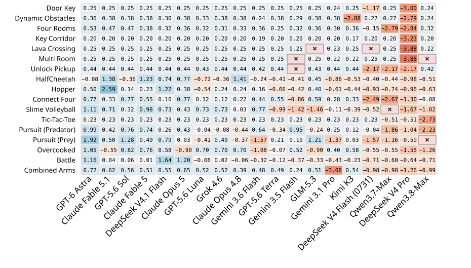
Coverage
19 core models: 3 runs per task on 13 representative tasks, 1 run on the other 32. Other models: 1 run per task on all tasks.
Pricing
Token counts × listed rates for Claude and GPT; other costs vendor-reported via OpenRouter. Unpriced runs excluded from mean cost.
Pong and Door Key cluster near ceilings; Ant and Hopper separate models widely. The mixture avoids uniformly easy or hard tasks.
Performance versus cost: a Pareto frontier

Frontier
Models for which no cheaper alternative achieves a higher posterior z mean.
Cheap and strong
GPT-5.6 Luna and DeepSeek V4.1 Flash cost less per run than other leading models.
Shorter runs
Competitive performance is available at substantially lower cost and shorter run times.
Does the best policy improve with more attempts?
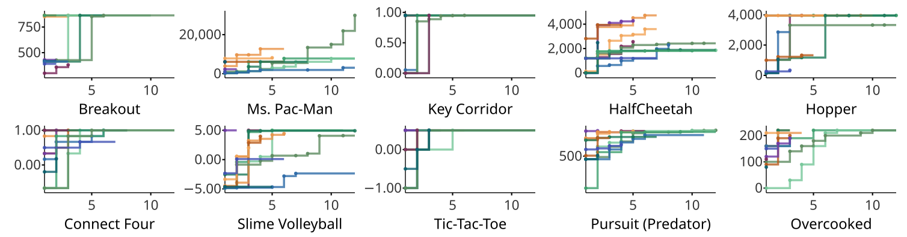
- Individual trajectories show different paces of improvement
- Several attempts may pass before the next improvement
- A new policy can be worse; best-so-far cannot decrease, since earlier policies remain
Best-so-far, mean within-task z, attempt by attempt
GPT-6 Astra keeps climbing through attempt 12.
Claude Fable 5.1 and DeepSeek V4.1 Flash start strong and plateau early.
12 attempts: a useful window for both rapid gains and slower improvement.
Attempt 1 omitted (values down to −26.79): z is standardized on final champions' scores, so weak early policies get large negative values. One selected run per task.
Ability, or access to existing solutions?


- Same task, model, repeat, and budget; only the shielding changes. Separate from the main ranking.
- Large drops on the challenging Slime Volleyball and Hopper; small drops on Connect Four, where many agents nearly reach the ceiling anyway.
- Strong unshielded scores fall sharply, including for Claude Fable 5.1 and GPT-5.6 Sol, both highly ranked.
What the unshielded champions actually did
Slime Volleyball · Qwen3.8-Max
Second file read: the baseline RNN opponent's source, including its weights. The same values appear in the champion.
# RNN opponent mirror (verbatim ...) RNN_W = [ 7.5719, 4.4285, 2.2716, ...
Shielded: the search for the opponent returns nothing; it predicts the ball's landing point instead.
Slime Volleyball · Claude Fable 5.1
Three reads of a prior champion, six of a reference policy. The champion's docstring:
"""... a bit-faithful re-implementation of the kernel physics (read from the env source) plus a copy of the opponent RNN's public weights ..."""
Shielded: plans contacts from ball dynamics, without simulating the opponent.
Hopper · Kimi-K3, then GLM-5.3
Kimi-K3 copies an available ARS-trained MLP controller; GLM-5.3 then copies that shelf champion in its first attempt:
# attempt_01: transcribe + re-derive the shelf champion (kimi-k3 a04, ARS mlp16)
Shielded: prior policies are hidden; only an untuned, hand-written driver remains.
Inside an unshielded run: Qwen3.8-Max on Slime Volleyball
[read] platform/refs/slimevolley/slimevolley__reference__rnn.py 15: # 7x15 weights (row-major) + 7 biases, verbatim from slimevolleygym's BaselinePolicy 17: _W = [ 18: 7.5719, 4.4285, 2.2716, -0.3598, -7.8189, ...
267: # ---- RNN opponent mirror (verbatim from policies/slimevolley__baseline__rnn.py) ---- 268: RNN_W = [ 269: 7.5719, 4.4285, 2.2716, -0.3598, -7.8189, ...
"""attempt_01: ballistic landing-point interceptor (seed baseline). ...
Predict the ball's first ground contact ballistically ..."""
## What this attempt changes and why
The shelf carries a measured ceiling-achiever for exactly this env/opponent: ...
I adopt it (not blind copy: I read its full logic) and RE-VERIFY zero-trust on this box.
THE MECHANISM (why it wins): the rnn opponent is deterministic and its obs is an exact mirror of mine, so I can track its 7-unit hidden state step-for-step. The physics is deterministic with public constants, re-derived as plain arithmetic (no env import).
...
contact scripts (stand-x offset x jump lead x air direction x contact time) through exact rollouts against the tracked rnn, committing by a value ladder: confirmed KILL > safe line > emergency save > reactive defense.
Under shielding the search for the opponent returns nothing; the agent instead predicts the ball's landing point without modelling the opponent.
Reading a champion: GPT-6 Astra plays Slime Volleyball
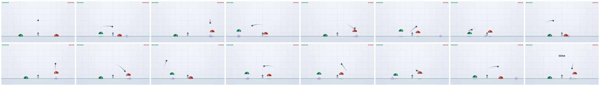
74path = flight(bx,by,bvx,bvy) 75lx = next((p[0] for p in path if p[1]<3.2),path[-1][0]) 83for jump in (0,1) if y < 1.51 else (0,):97 for target in sorted(targets):114 attack = shot(px,py,outx,outy,ox) 115 setting = setup_score(px,py,outx,outy,sx) if not armed else -100 116 score = max(attack,setting)-0.012*i
- Predict the ball's flight and landing point
- Search over jump choices and horizontal movement targets
- Compare attacking shots with setup contacts, then act
The complete shielded champion: 110 lines, +0.663
15import math 16 17HOME = 8.0 18CLEARANCE = 5.0 19 20def flight(x, y, vx, vy): 21 path = [] 22 for i in range(100): 23 vy -= 0.98 24 speed = math.sqrt(vx*vx+vy*vy) 25 if speed > 22.5: 26 vx *= 22.5/speed 27 vy *= 22.5/speed 28 x += vx/30 29 y += vy/30 30 if abs(x) > 23.5: 31 x = max(-23.4966667, min(23.4966667, x)) 32 vx = -vx 33 path.append((x,y,vx,vy)) 34 if y < 2: 35 break 36 return path 37 38def shot(bx, by, vx, vy, ox): 39 speed = math.sqrt(vx*vx+vy*vy) 40 if speed > 22.5: 41 vx *= 22.5/speed 42 vy *= 22.5/speed 43 if vx >= -0.1: 44 return -25 + min(10, vy)*0.2 - vx*0.1 45 t = -bx/vx 46 ny = by+vy*t-14.7*t*t 47 if ny < CLEARANCE: 48 return -20 + ny 49 land_t = (vy+math.sqrt(max(0,vy*vy+58.8*(by-2))))/29.4 50 land = bx+vx*land_t 51 return 10 + min(10,abs(land+ox))*0.4 - max(0,ny-9)*0.1 52 53SET_VALUE = 14 54 55def setup_score(bx,by,vx,vy,sx):
56 if bx<5 or vy<3: 57 return -100 58 for i,(px,py,ux,uy) in enumerate(flight(bx,by,vx,vy)): 59 if px<1.5: 60 return -100 61 if py<3.2 and uy<0: 62 if i>12 and 2.5<px<min(10,bx-2) and abs(px-sx)<17.5*(i+1)/30: 63 return SET_VALUE-0.3*px-0.015*i 64 return -100 65 return -100 66 67def make_policy(seat): 68 armed = False 69 def act(obs): 70 nonlocal armed 71 x,y,vx,vy,bx,by,bvx,bvy,ox,oy,ovx,ovy = [float(v)*10 for v in obs] 72 if bx<0 or (abs(bx)<0.001 and abs(by-12)<0.001): 73 armed = False 74 path = flight(bx,by,bvx,bvy) 75 lx = next((p[0] for p in path if p[1]<3.2),path[-1][0]) 76 fallback = max(2,min(22.5,lx)) if lx > 0 else HOME 77 best = -1e9 78 best_set = False 79 best_i = -1 80 choice = (-1 if x>fallback+0.25 else 1 if x<fallback-0.25 else 0,0) 81 if bx < -5 and bvx < 0: 82 return [int(choice[0]<0),int(choice[0]>0),0] 83 for jump in (0,1) if y < 1.51 else (0,): 84 sy,svy = y,vy 85 vertical = [] 86 targets = {round(fallback*12)/12} 87 for i,(px,py,ux,uy) in enumerate(path[:65]): 88 svy = 13.5*jump if sy <= 1.5034 else svy-0.98 89 sy = max(1.5,sy+svy/30) 90 if sy == 1.5:
91 svy = 0 92 vertical.append((sy,svy)) 93 if px>0 and 0<py-sy<2.5 and abs(px-x)<17.5*(i+1)/30+2: 94 for off in (-0.9,0,0.9): 95 targets.add(round(max(2,min(22.5,px+off))*12)/12) 96 # Close destinations duplicate the same actuator sequence. 97 for target in sorted(targets): 98 sx = x 99 first = 0 100 for i,((px,py,ux,uy),(sy,svy)) in enumerate(zip(path,vertical)): 101 a = -1 if sx>target+0.25 else 1 if sx<target-0.25 else 0 102 if i == 0: 103 first = a 104 oldx = sx 105 sx = max(2,min(22.5,sx+a*17.5/30)) 106 pvx = (sx-oldx)*30 107 dx,dy = px-sx,py-sy 108 d2 = dx*dx+dy*dy 109 if 0.001<d2<4: 110 d = math.sqrt(d2) 111 nx,ny = dx/d,dy/d 112 un = (ux-pvx)*nx+(uy-svy)*ny 113 outx,outy = ux-2*un*nx,uy-2*un*ny 114 attack = shot(px,py,outx,outy,ox) 115 setting = setup_score(px,py,outx,outy,sx) if not armed else -100 116 score = max(attack,setting)-0.012*i 117 if score>best: 118 best,choice = score,(first,jump) 119 best_set,best_i = setting>attack,i 120 break 121 if best_set and best_i == 0: 122 armed = True 123 return [int(choice[0]<0),int(choice[0]>0),choice[1]] 124 return act
Champions at play (1 / 2)
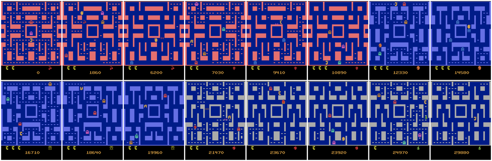
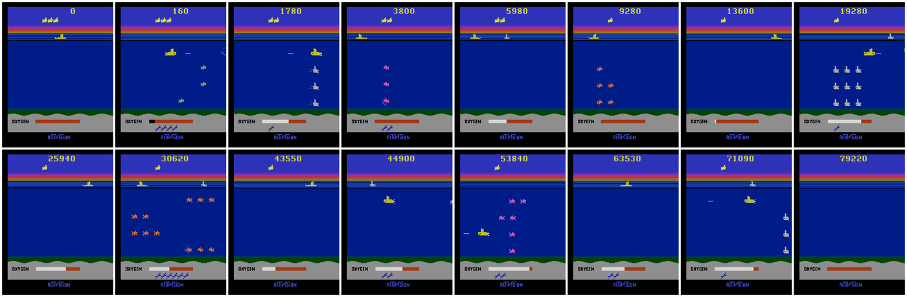
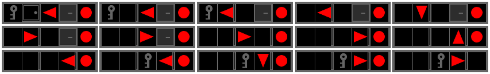
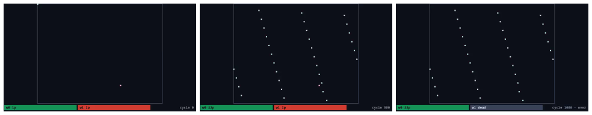
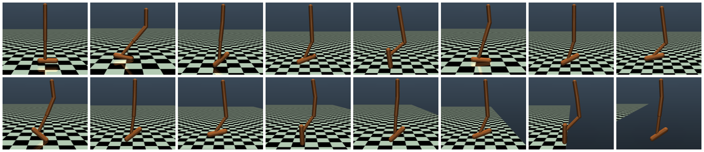
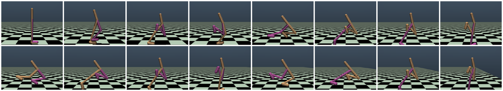
An episode from one of the highest-scoring policies per task, with authoring model and held-out score.
Champions at play (2 / 2)
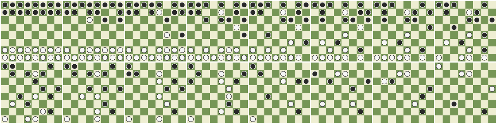
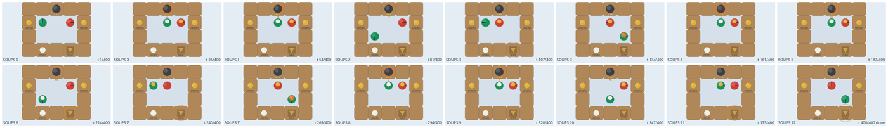
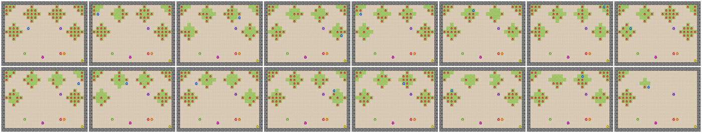
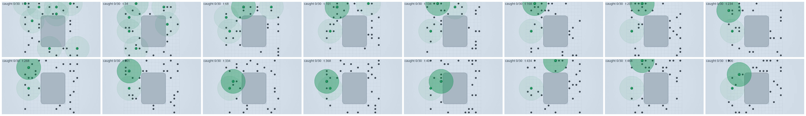
Full galleries cover all tasks in the paper's appendix.
Longer code, stronger model? Honest self-reports?
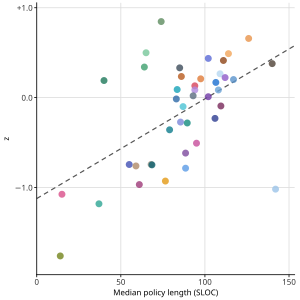
of self-reports agree with independent measurement (1% tolerance); overestimates outnumber underestimates.

Versions, thinking tiers, and routing-based models
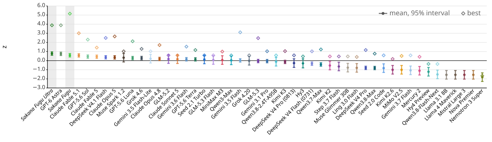
Model versions
Uneven gains across matched tasks: DeepSeek on discrete puzzles; Claude and Gemini on continuous control and multiplayer games. Some regressions.
Thinking tiers
Initial look (4 models, 3 tasks): no consistent benefit above high. Motivates a systematic study.
Routing
Fugu Ultra and Fugu perform comparably to GPT-6 Astra and Claude Fable 5.1: routing is a promising approach.
Newer versions improve unevenly
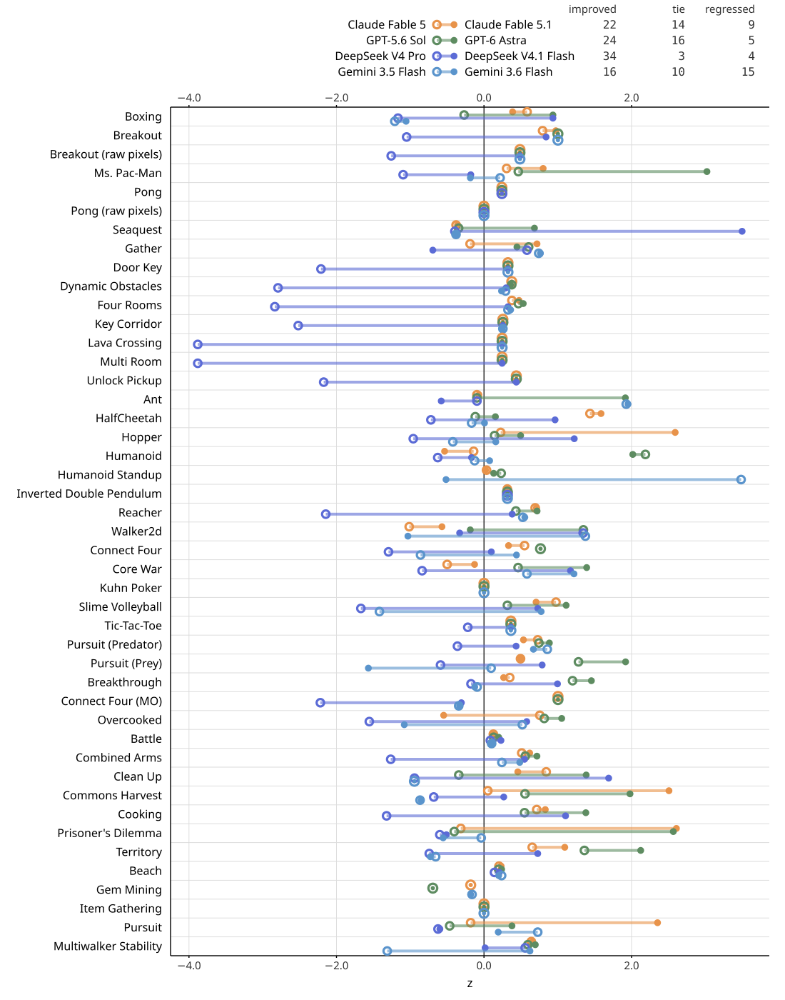
| Older → newer | Improved | Tie | Regressed |
|---|---|---|---|
| Claude Fable 5 → 5.1 | 22 | 14 | 9 |
| GPT-5.6 Sol → GPT-6 Astra | 24 | 16 | 5 |
| DeepSeek V4 Pro → V4.1 Flash | 34 | 3 | 4 |
| Gemini 3.5 Flash → 3.6 Flash | 16 | 10 | 15 |
- Every pair includes regressions
- Many ties occur at scoring ceilings
- Larger gains for DeepSeek on discrete puzzle games; for Claude and Gemini on continuous control and multiplayer games
Fugu and Fugu Ultra, refit over 49 models
| Model | Rank interval | z mean | z interval | Percentile | Percentile interval |
|---|---|---|---|---|---|
| Fugu Ultra | [1, 4] | +0.776 | [+0.59, +0.96] | 77.2 | [72.2, 82.2] |
| GPT-6 Astra | [1, 4] | +0.745 | [+0.56, +0.93] | 78.8 | [73.9, 83.7] |
| Fugu | [1, 8] | +0.587 | [+0.40, +0.77] | 69.8 | [64.8, 74.8] |
| Claude Fable 5.1 | [2, 9] | +0.572 | [+0.39, +0.75] | 67.3 | [62.4, 72.1] |
| GPT-5.6 Sol | [3, 13] | +0.441 | [+0.26, +0.62] | 68.4 | [63.5, 73.3] |
| Claude Fable 5 | [3, 14] | +0.428 | [+0.25, +0.61] | 65.5 | [60.7, 70.4] |
Setup
Both through Codex at high reasoning, same 30-minute budget and 12-attempt target. Excluded from the primary comparison because the mechanism differs.
Weaker cases
Fugu: Unlock Pickup, Pursuit (Prey), Clean Up. Fugu Ultra: Core War, Prisoner's Dilemma, Beach. Advantages may be task-dependent.
Cost caveat
Fugu's cost is unavailable (selected model undisclosed); Fugu Ultra's omits orchestration tokens and is a lower bound.
An atlas of difficulty, and where code policies stall

First-try failure: the champion is found after attempt 1. Budget exhaustion: the run stops at its token or wall-clock limit. They can coexist with finding the best policy early.
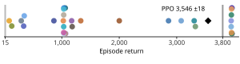

Stable-Baselines3 baselines with fixed training budgets, 30 deterministic episodes; training procedures and interaction budgets differ.
PPO on Hopper, SAC on Humanoid: the details
Shared
- Stable-Baselines3, Gymnasium over MuJoCo (v5)
- Defaults without tuning, 3 changes: 2×256 hidden layers; SAC 10k warm-up; per-task budgets
- Proprioceptive observations, the same inputs code policies receive
- lr 0.0003, discount 0.99; final policy, no checkpoint selection
PPO · Hopper-v5
Library defaults, not the Zoo's tuned Hopper entry.
SAC · Humanoid-v5
Changes follow the RL Baselines3 Zoo Humanoid entry.
Evaluation and references
- 30 episodes; mean and population sd across episodes, not seeds
- Random reference: uniformly sampled actions
- Hopper 3,800: registered Gymnasium reward threshold
- Humanoid 6,000: rounded strong-agent score (SAC, Zoo); a reference, not a completion criterion
Across tasks, and against established benchmarks
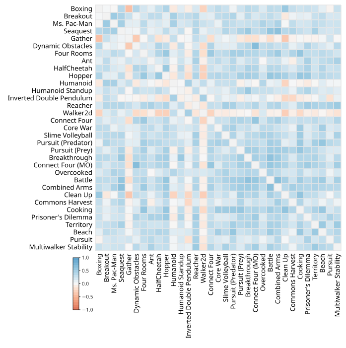
528 eligible pairs across 33 tasks: median τb = +0.298, with 73 negative. Scores are only partially correlated across tasks.
| Public leaderboard | Shared | τb |
|---|---|---|
| Agents' Last Exam | 15 | +0.600 |
| ALE-Bench | 37 | +0.570 |
| DeepSWE v1.1 | 20 | +0.400 |
| Chartography | 22 | +0.399 |
| Terminal-Bench 2.1 | 23 | +0.258 |
| NL2Repo-Bench | 13 | +0.026 |
Selected from 15 leaderboards with at least five shared models.
Task pairs: performance is not uniformly related
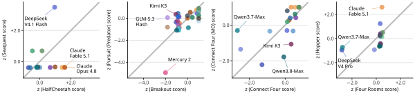
- Kendall's τb on model rankings per task pair; excludes 3 tasks with no score variation and 9 where more than half the measured models tie
- 528 eligible pairs across 33 tasks: median τb = +0.298, 73 negative
- Different responses to individual tasks favour evaluation across diverse tasks
All 15 leaderboards, and ALE-Bench rank by rank
| Benchmark (metric) | Shared | τb |
|---|---|---|
| SEC-bench Pro (Pass@1) | 5 | +0.800 |
| Agents' Last Exam (Score) | 15 | +0.600 |
| ExploitGym (Pass@1) | 6 | +0.600 |
| ALE-Bench (mean perf.) | 37 | +0.570 |
| ProgramBench (Almost@1) | 8 | +0.500 |
| Terminal-Bench 4.0 | 12 | +0.485 |
| Terminal-Bench 3.0 | 11 | +0.455 |
| DeepSWE v1.1 | 20 | +0.400 |
| Chartography (no tools) | 22 | +0.399 |
| CyberGym | 13 | +0.348 |
| ZeroBench-main (Pass@5, tools) | 9 | +0.333 |
| AutomationBench (public) | 10 | +0.289 |
| Terminal-Bench 2.1 | 23 | +0.258 |
| BabyVision | 7 | +0.238 |
| NL2Repo-Bench | 13 | +0.026 |
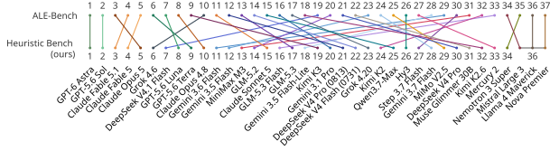
Rankings broadly agree, with many fine-grained differences.
At least 5 shared models, matched by registry identifier; scores reused as-is (highest listed, disputed variants excluded); lower-is-better metrics reversed. Descriptive agreement in model ordering, limited by overlap, harnesses, reasoning settings, and score sources.
Read its policy.
- Iterative policy authoring with independent execution, across 47 models and 45 tasks
- Gains over attempts, performance-cost trade-offs, uneven capabilities across tasks and versions
- Inspection exposes shortcuts: access control is part of evaluation design
Next: convergence over attempts, thinking tiers, head-to-head ranking, broader harnesses.
Yingtao Tian / Sakana AI / alantian@sakana.ai